El Super Saiyan 1 es la emblemática transformación de Dragon Ball donde el cabello se
vuelve rubio, los ojos turquesa y el poder de combate se multiplica por la ira. Fue alcanzada
por primera vez por Goku al enfrentarse a Freezer en el planeta Namek.
Super Saiyajin Fase 2
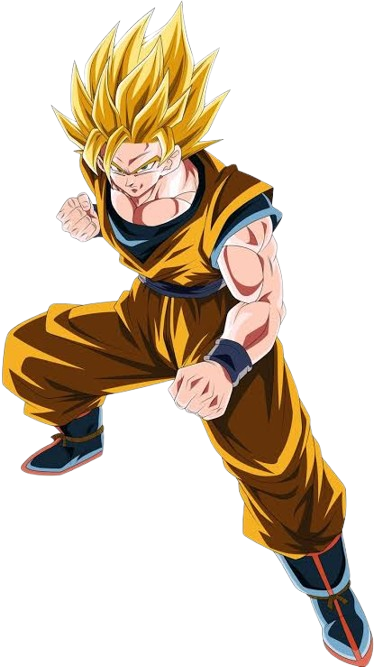
El Super Saiyan 2 es una transformación más poderosa que la Fase 1, con un cabello mas
erizado y rafagas de rayos al rededor del aura. Goku alcanzó esta forma durante su entrenamiento
en el planeta de Kaiosama.
Super Saiyajin Fase 3
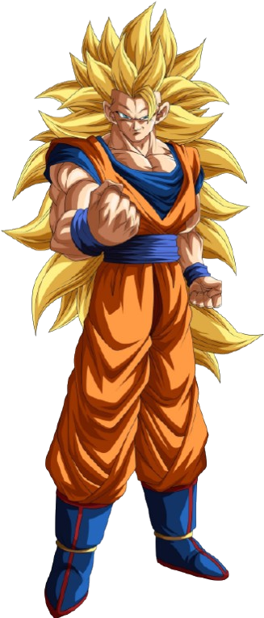
El Super Saiyan 3 es una transformación aún más poderosa que la Fase 2, con un cabello
mas largo y sin cejas y manteniendo las rafagas de rayos. Goku alcanzó esta forma durante su
entrenamiento en el planeta de Kaiosama.
Super Saiyajin Fase 4
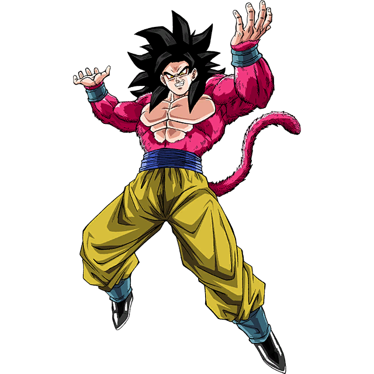
El Super Saiyan 4 Presenta un aspecto salvaje cubierto por un pelaje rojo o rojizo, una
melena oscura y prominente, y ojos delineados de rojo. Su poder es colosal y restaura al usuario
a su estado físico óptimo, combinando la fuerza desatada del Ozaru con el control total del
Saiyajin.
Super Saiyajin Fase 5
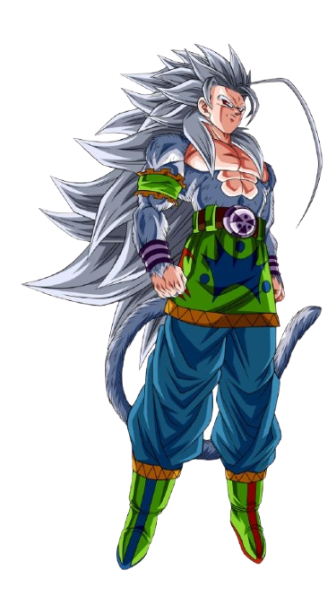
El Super Saiyan 5 En la historia de Majin Gokuablez, luce una imponente melena plateada
y un pelaje gris claro que cubre gran parte de su cuerpo. Su fuerza supera abismalmente a la de
un Dios de la Destrucción, siendo capaz de destruir galaxias enteras con simples ráfagas de
energía.
Super Saiyajin Fase 6
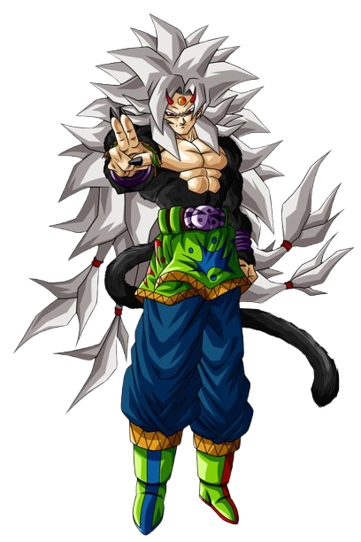
El Super Saiyan 6 Representa un nivel místico donde el Saiyajin obtiene una piel y
pelaje de color negro con cuernos diminutos en la frente y un aura de fuego. En esta forma, el
usuario domina el Ki maligno o la energía de la dimensión oscura para liberar un poder abrumador
sin perder el control.
Super Saiyajin Fase 7
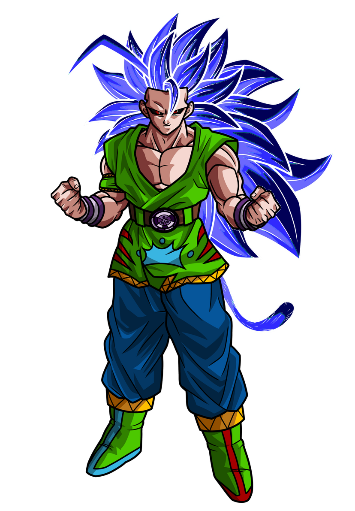
El Super Saiyan 7 Esta fase se caracteriza por un largo cabello azul marino u oscuro y
una presencia de Ki helado o cósmico. En la historia de Majin Gokuablez, otorga una velocidad
inalcanzable y la capacidad de desgarrar dimensiones para enfrentar a seres invencibles.
Super Saiyajin Fase 8
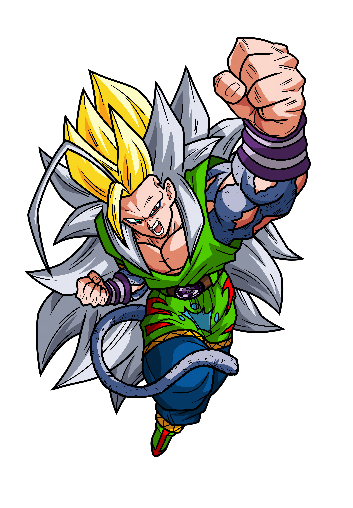
El Super Saiyan 8 En esta etapa, el guerrero toma un aspecto salvaje con tonos dorados o
plateados extremados y ojos completamente oscuros o amarillos según la variante. Multiplica
masivamente la fuerza física sacrificando estabilidad, siendo una forma desatada para combates
contra villanos supremos.
Super Saiyajin Fase 9
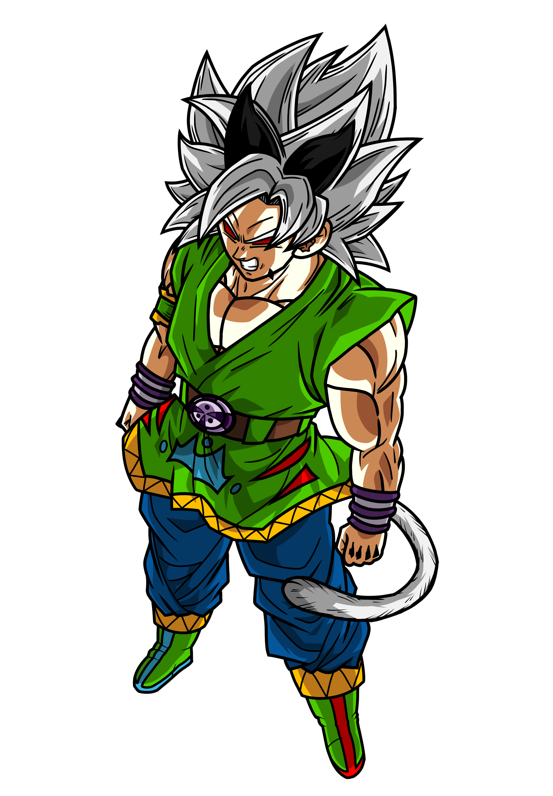
El Super Saiyan 9 Conocida por un diseño con cabello blanco con mechone negros
resplandeciente y cuernitos en el menton .Esta fase Involucra el uso de absorción o sacrificio
del poder y esencia de personajes como Zaiko (o variantes como Pycho/Pikkon), equilibrando ki
negativo y maligno.
Super Saiyajin Fase 10
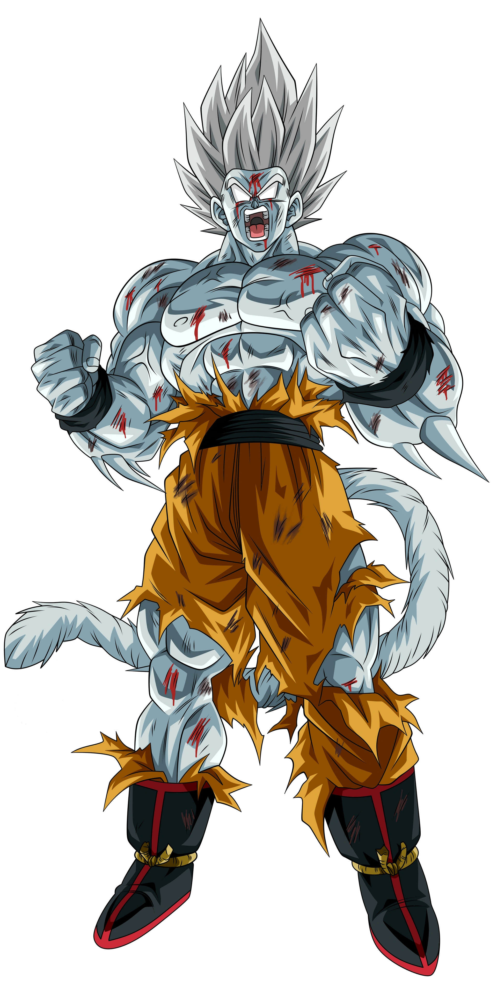
El Super Saiyan 10 Es la cima más famosa y temida de Dragon Ball AF, con un aspecto
totalmente imponente y monstruoso de tono gris plateado o negro con piel sombría. Desata un
poder Prohibido e infinito capaz de colapsar la realidad y destruir universos enteros de un solo
impacto.
Fases Divinas
Super
Super Saiyajin God
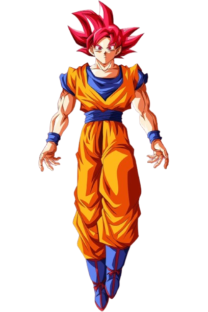
Presenta un aspecto más delgado y estilizado, con el cabello y las cejas de un color
magenta o rojo vivo, acompañados por un aura en llamas. Su fuerza sobrepasa los límites mortales
al canalizar el Ki divino, permitiendo luchar al nivel de dioses y curar heridas rápidamente.
Goku alcanzo esta transformacion gracias al ritual de la transformación divina que les menciono
shenlong y para realizarla se necesita de un total de 6 saiyajins
Super Saiyajin Blue
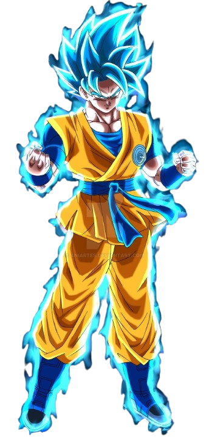
El Super Saiyajin Blue luce el peinado erizado tradicional del Super Saiyan pero teñido
de un brillante azul turquesa, rodeado por un aura flameante de Ki divino azul. Combina el poder
del Super Saiyan God con la primera forma, otorgando una fuerza devastadora con mayor
estabilidad y control. Goku alcanzó esta forma durante su entrenamiento con wiss en el planeta
de beerus .
Super Saiyajin Rose
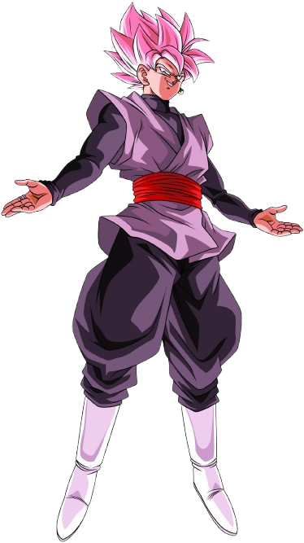
Luce el peinado erizado característico del Super Saiyan pero teñido de un rosa
brillante o pastel, con pupilas grisáceas y un aura oscura con tonos morados y carmesí. Su
fuerza es equivalente o superior a la del Super Saiyan Blue, manifestando un Ki divino
corrompido que le permite crear armas de energía, como hoces y espadas, con una potencia
devastadora. es adquirida por zamasu tras robarle el cuerpo a goku y es asi como corrompe el ki
divino adquiriendo ese color rosa
Super Saiyajin Blue Evolution
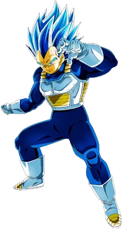
El Super Saiyajin Blue Evolution se distingue por un tono azul marino mucho más oscuro
e intenso en el cabello y las pupilas, junto a una musculatura notablemente más desarrollada.
Eleva el poder del Super Saiyan Blue a un nivel superior comparable al de un Dios de la
Destrucción, liberando una fuerza colosal sin el desgaste físico del Kaioken. este se consigue
por primera vez por vegueta en el torneo del poder tras un ataque de ira.
Ultra Instinct
El Ultra instinto incompleto presenta el cabello erizado de forma similar al estado
base, pero con un brillo plateado en los bordes y pupilas de un gris plateado deslumbrante. Su
mayor fuerza reside en la capacidad de esquivar y reaccionar ante cualquier ataque de forma
automática e inconsciente, aunque su poder ofensivo aún no alcanza su punto máximo.
Ultra Instinct Mastered
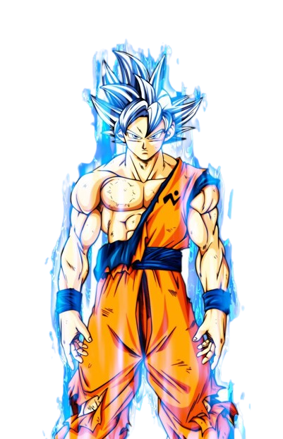
El Ultra Instinct Mastered se caracteriza por una melena completamente plateada y
brillante, con ojos del mismo tono y un aura divina blanca e incandescente. En esta forma, el
cuerpo ataca y defiende por pura intuición, alcanzando un nivel de fuerza y velocidad divinas
capaz de superar a los Dioses de la Destrucción.
Ultra Ego
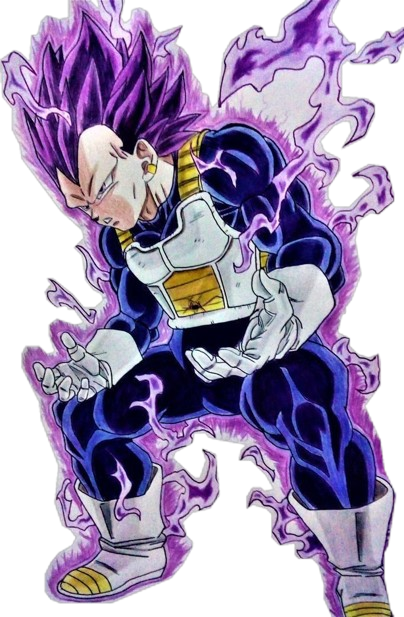
Luce un cabello de color morado o púrpura, una musculatura marcada y la ausencia total
de cejas, dándole un aspecto intimidante y salvaje. Su poder radica en la destrucción y aumenta
continuamente a medida que el usuario recibe daño en combate, convirtiendo el dolor en una
fuerza devastadora e ilimitada.
Fases Híbridas/Mutantes
Super Saiyajin Legendario
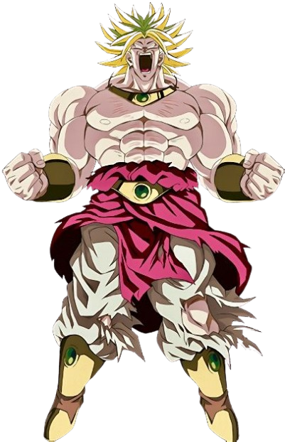
El Super Saiyajin Legendario se caracteriza por una estatura gigantesca, una musculatura
excesivamente desarrollada, cabello erizado teñido de verde lima y ojos completamente blancos
por la furia. Su fuerza aumenta continuamente a medida que combate.
Modo Bestia
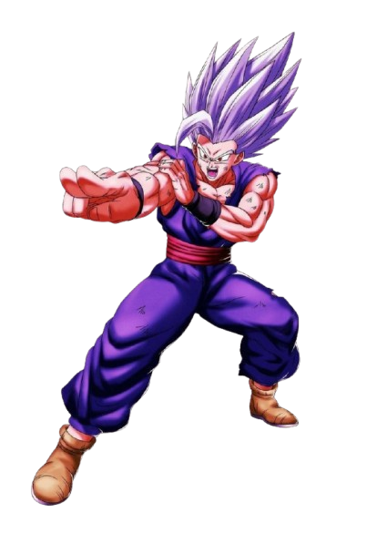
Se distingue por una enorme melena erizada de color gris plateado, pupilas rojas
brillantes y un aura azul violácea con rayos rojos. Su fuerza supera los límites del poder
divino.
Super Saiyajin Maligno
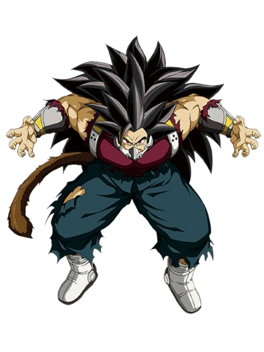
Esta forma luce un largo cabello erizado y un aura oscura y rojiza de Ki maligno. Su
Ki corrompido puede infectar a otros guerreros y llevarlos a la ira.